Last updated: 2020-11-02
Checks: 7 0
Knit directory: finemap-uk-biobank/
This reproducible R Markdown analysis was created with workflowr (version 1.6.2). The Checks tab describes the reproducibility checks that were applied when the results were created. The Past versions tab lists the development history.
Great! Since the R Markdown file has been committed to the Git repository, you know the exact version of the code that produced these results.
Great job! The global environment was empty. Objects defined in the global environment can affect the analysis in your R Markdown file in unknown ways. For reproduciblity it's best to always run the code in an empty environment.
The command set.seed(20191114) was run prior to running the code in the R Markdown file. Setting a seed ensures that any results that rely on randomness, e.g. subsampling or permutations, are reproducible.
Great job! Recording the operating system, R version, and package versions is critical for reproducibility.
Nice! There were no cached chunks for this analysis, so you can be confident that you successfully produced the results during this run.
Great job! Using relative paths to the files within your workflowr project makes it easier to run your code on other machines.
Great! You are using Git for version control. Tracking code development and connecting the code version to the results is critical for reproducibility.
The results in this page were generated with repository version 9459e04. See the Past versions tab to see a history of the changes made to the R Markdown and HTML files.
Note that you need to be careful to ensure that all relevant files for the analysis have been committed to Git prior to generating the results (you can use wflow_publish or wflow_git_commit). workflowr only checks the R Markdown file, but you know if there are other scripts or data files that it depends on. Below is the status of the Git repository when the results were generated:
Ignored files:
Ignored: .DS_Store
Ignored: .Rhistory
Ignored: .Rproj.user/
Ignored: analysis/.Rhistory
Ignored: scripts/.DS_Store
Untracked files:
Untracked: data/bloodcounts_V1.csv
Untracked: data/height.chr3.matrix
Untracked: data/susie_ss_input_sex.rds
Unstaged changes:
Modified: analysis/compare_result_more.Rmd
Note that any generated files, e.g. HTML, png, CSS, etc., are not included in this status report because it is ok for generated content to have uncommitted changes.
These are the previous versions of the repository in which changes were made to the R Markdown (analysis/bloodcells.Rmd) and HTML (docs/bloodcells.html) files. If you've configured a remote Git repository (see ?wflow_git_remote), click on the hyperlinks in the table below to view the files as they were in that past version.
| File | Version | Author | Date | Message |
|---|---|---|---|---|
| Rmd | 9459e04 | zouyuxin | 2020-11-02 | wflow_publish("analysis/bloodcells.Rmd") |
| html | 9e0d1c3 | zouyuxin | 2020-11-02 | Build site. |
| Rmd | 075c952 | zouyuxin | 2020-11-02 | wflow_publish("analysis/bloodcells.Rmd") |
| html | b6f3f56 | zouyuxin | 2020-10-27 | Build site. |
| Rmd | d20e2e8 | zouyuxin | 2020-10-27 | wflow_publish("analysis/bloodcells.Rmd") |
The UkB blood cell traits are
| PheID | Abbrev | Phenotype | Cell type | Determination |
|---|---|---|---|---|
| 30000 | WBCcount | White blood cell count | Compound white cell | Measured |
| 30010 | RBCcount | Red blood cell count | Mature red cell | Measured |
| 30020 | HGB | Haemoglobin concentration | Mature red cell | Measured |
| 30030 | HCT | Haematocrit percentage | Mature red cell | (RBCcount x MCV) / 10 |
| 30040 | MCV | Mean corpuscular volume | Mature red cell | Measured |
| 30050 | MCH | Mean corpuscular haemoglobin | Mature red cell | (hemoglobin/RBCcount) x 10 |
| 30060 | MCHC | Mean corpuscular haemoglobin concentration | Mature red cell | (haemoglobin/haematocrit) x 100 |
| 30070 | RDW | Red blood cell distribution width | Mature red cell | Measured |
| 30080 | PLTcount | Platelet count | Platelet | Measured |
| 30090 | PCT | Platelet crit | Platelet | Measured |
| 30100 | MPV | Mean platelet (thrombocyte) volume | Platelet | (PCT/PLTcount) x 10000 |
| 30110 | PDW | Platelet distribution width | Platelet | Measured |
| 30120 | LYMPHcount | Lymphocyte count | Lymphoid white cell | (LYMPHperc/100) x WBCcount |
| 30130 | MONOcount | Monocyte count | Myeloid white cell | (MONOperc/100) x WBCcount |
| 30140 | NEUTcount | Neutrophill count | Myeloid white cell | (NEUTperc/100) x WBCcount |
| 30150 | EOcount | Eosinophill count | Myeloid white cell | (EOperc/100) x WBCcount |
| 30160 | BASOcount | Basophill count | Myeloid white cell | (BASOperc/100) x WBCcount |
| 30180 | LYMPHperc | Lymphocyte percentage | Compound white cell | Measured |
| 30190 | MONOperc | Monocyte percentage | Compound white cell | Measured |
| 30200 | NEUTperc | Neutrophill percentage | Compound white cell | Measured |
| 30210 | EOperc | Eosinophill percentage | Compound white cell | Measured |
| 30220 | BASOperc | Basophill percentage | Compound white cell | Measured |
| 30240 | RETperc | Reticulocyte percentage | Immature red cell | Measured |
| 30250 | RETcount | Reticulocyte count | Immature red cell | (RETperc/100) × RBCcount |
| 30260 | MRV | Mean reticulocyte volume | Immature red cell | MCV x (RETperc/100) |
| 30270 | MSCV | Mean sphered cell volume | Mature red cell | Measured |
| 30280 | IRF | Immature reticulocyte fraction | Immature red cell | HLRcount/RETcount |
| 30290 | HLRperc | High light scatter reticulocyte percentage | Immature red cell | Measured |
| 30300 | HLRcount | High light scatter reticulocyte count | Immature red cell | (HLRperc/100) × RBCcount |
We filtered individuals with following criteria:
Remove samples that are not marked as being "White British".
Remove samples with missing values.
Remove samples with mismatches between self-reported and genetic sex.
Remove outliers defined by UK Biobank.
Remove any individuals have at leat one relative based on the kinship calculations.
Remove any pregnant individuals.
Remove any individuals with following in hospital in-patient data:
leukemia, lymphoma, bone marrow transplant, chemotherapy, myelodysplastic syndrome, anemia, HIV, end-stage kidney disease, dialysis, cirrhosis, multiple myeloma, lymphocytic leukemia, myeloid leukemia, polycythaemia vera, haemochromatosis
Load UKBiobank Blood Cell traits (individuals are filtered using script)
library(data.table)
library(dplyr)
dat = fread('data/bloodcounts_V1.csv')
class(dat) <- "data.frame"There are 257604 individuals.
Check distribution for each trait:
par(mfrow=c(2,3))
for(i in 16:44){
hist(dat[,i], breaks = 100, main=colnames(dat)[i], xlab='x')
}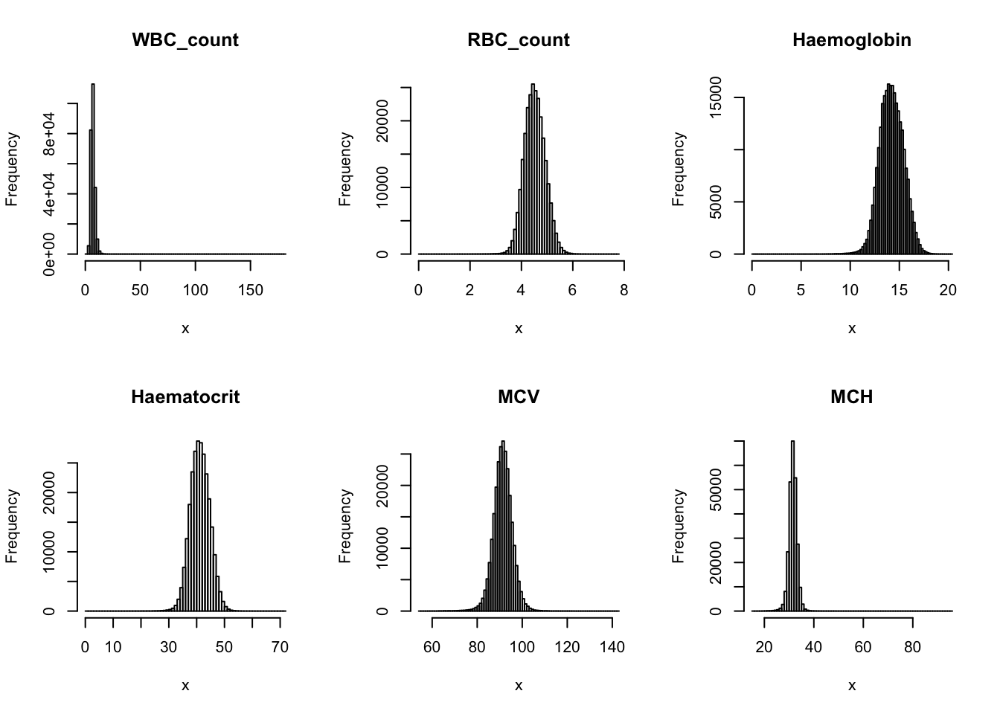
| Version | Author | Date |
|---|---|---|
| b6f3f56 | zouyuxin | 2020-10-27 |
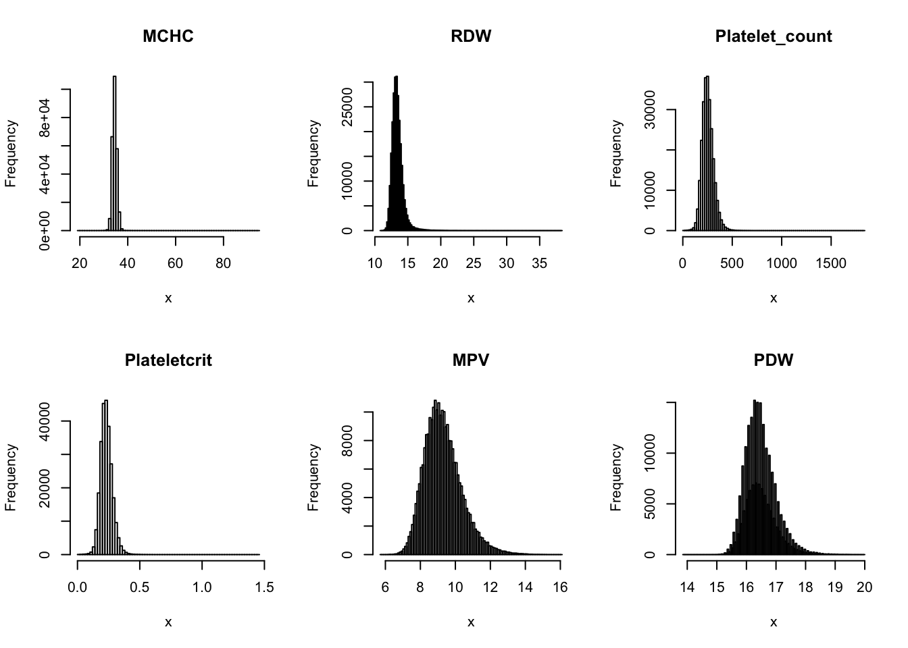
| Version | Author | Date |
|---|---|---|
| b6f3f56 | zouyuxin | 2020-10-27 |
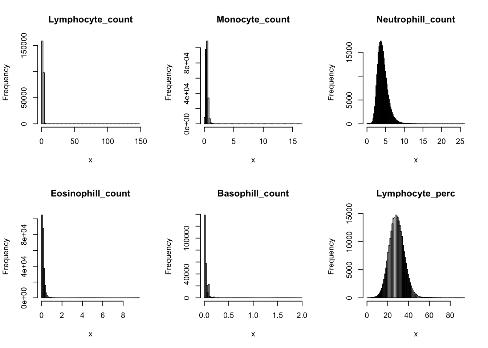
| Version | Author | Date |
|---|---|---|
| b6f3f56 | zouyuxin | 2020-10-27 |
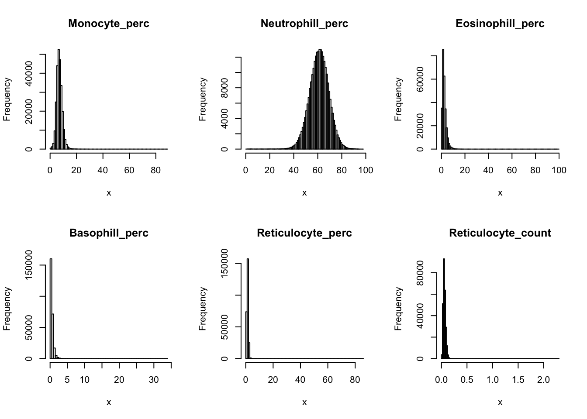
| Version | Author | Date |
|---|---|---|
| b6f3f56 | zouyuxin | 2020-10-27 |
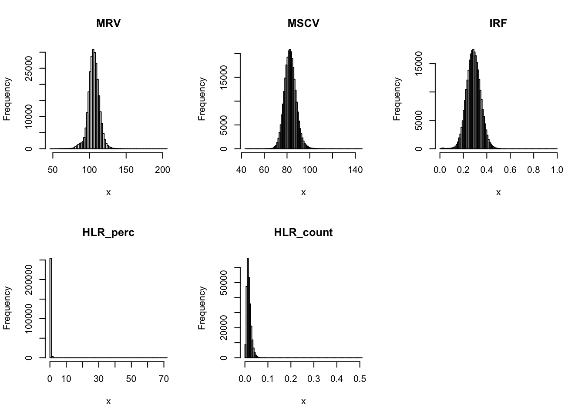
| Version | Author | Date |
|---|---|---|
| b6f3f56 | zouyuxin | 2020-10-27 |
Distributions for trait with small observartions:
par(mfrow=c(2,3))
hist(dat$WBC_count[dat$WBC_count < 20], breaks = 100, main=paste0('WBC_count ', sum(dat$WBC_count > 20), ' inds > 20'), xlab='x')
hist(dat$Lymphocyte_count[dat$Lymphocyte_count < 8], breaks = 100, main=paste0('Lymphocyte_count ', sum(dat$Lymphocyte_count > 8), ' inds > 8'), xlab='x')
hist(dat$Monocyte_count[dat$Monocyte_count < 2], breaks = 100, main=paste0('Monocyte_count ', sum(dat$Monocyte_count > 2), ' inds > 2'), xlab='x')
hist(dat$Eosinophill_count[dat$Eosinophill_count < 1], breaks = 100, main=paste0('Eosinophill_count ', sum(dat$Eosinophill_count > 1), ' inds > 1'), xlab='x')
hist(dat$Eosinophill_perc[dat$Eosinophill_perc < 10], breaks = 100, main=paste0('Eosinophill_perc ', sum(dat$Eosinophill_perc > 10), ' inds > 10'), xlab='x')
hist(dat$Basophill_count[dat$Basophill_count < 0.5], breaks = 100, main=paste0('Basophill_count ', sum(dat$Basophill_count > 0.5), ' inds > 0.5'), xlab='x')
| Version | Author | Date |
|---|---|---|
| b6f3f56 | zouyuxin | 2020-10-27 |
hist(dat$Basophill_perc[dat$Basophill_perc < 2], breaks = 100, main=paste0('Basophill_perc ', sum(dat$Basophill_perc > 2), ' inds > 2'), xlab='x')
hist(dat$Reticulocyte_count[dat$Reticulocyte_count < 0.2], breaks = 100, main=paste0('Reticulocyte_count ', sum(dat$Reticulocyte_count > 0.2), ' inds > 0.2'), xlab='x')
hist(dat$Reticulocyte_perc[dat$Reticulocyte_perc < 4], breaks = 100, main=paste0('Reticulocyte_perc ', sum(dat$Reticulocyte_perc > 4), ' inds > 4'), xlab='x')
hist(dat$HLR_count[dat$HLR_count < 0.1], breaks = 100, main=paste0('HLR_count ', sum(dat$HLR_count > 0.1), ' inds > 0.1'), xlab='x')
hist(dat$HLR_perc[dat$HLR_perc < 2], breaks = 100, main=paste0('HLR_perc ', sum(dat$HLR_perc > 2), ' inds > 2'), xlab='x')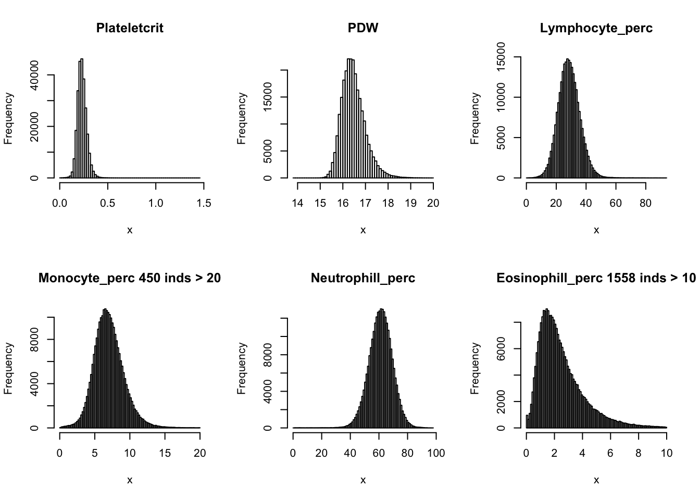
| Version | Author | Date |
|---|---|---|
| b6f3f56 | zouyuxin | 2020-10-27 |
Basophils count is the proportion of ( basophils / 100 ) x white blood cell count.
Basophils_count = dat$Basophill_perc * dat$WBC_count / 100
{plot(Basophils_count, dat$Basophill_count, ylab='UKB Basophill count')
abline(0,1)}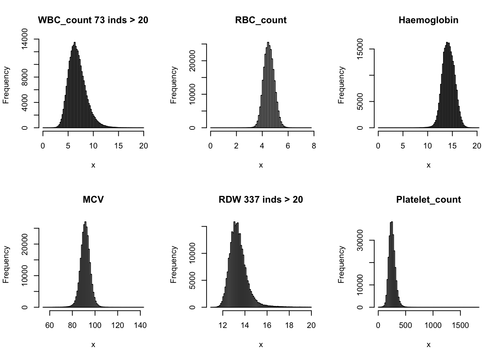
| Version | Author | Date |
|---|---|---|
| b6f3f56 | zouyuxin | 2020-10-27 |
There are 835 0's in computed Basophils_count, but there are 75056 0's in UKB Basophils count.
hist(Basophils_count[Basophils_count < 0.5], breaks = 100, main=paste0('Derived Basophils_count ', sum(Basophils_count > 0.5), ' inds > 0.5'), xlab='x')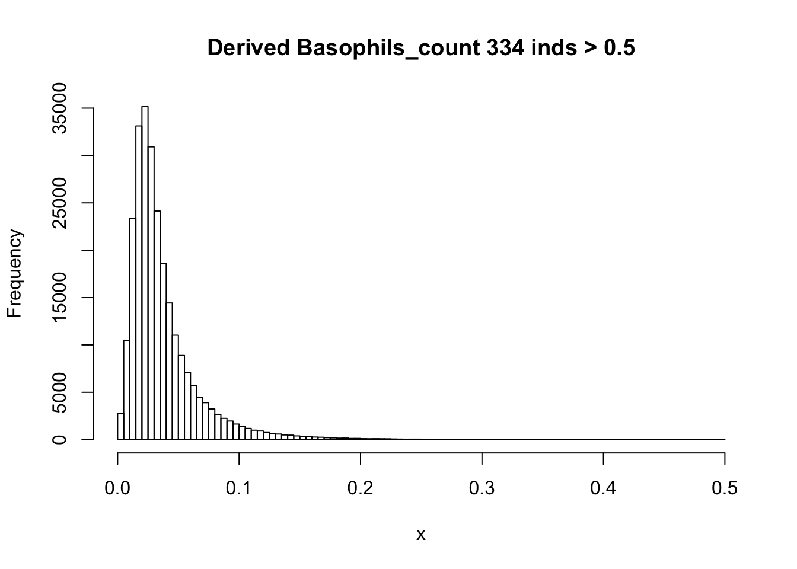
| Version | Author | Date |
|---|---|---|
| b6f3f56 | zouyuxin | 2020-10-27 |
There are rounding errors in derived count traits.
We recompute all derived traits.
dat$Haematocrit = (dat$MCV * dat$RBC_count)/10
dat$MCH = (dat$Haemoglobin/dat$RBC_count) * 10
dat$MCHC = (dat$Haemoglobin/dat$Haematocrit)*100
dat$MPV = (dat$Plateletcrit/dat$Platelet_count) * 10000
dat$Lymphocyte_count = (dat$Lymphocyte_perc * dat$WBC_count)/100
dat$Monocyte_count = (dat$Monocyte_perc * dat$WBC_count)/100
dat$Eosinophill_count = (dat$Eosinophill_perc * dat$WBC_count)/100
dat$Basophill_count = (dat$Basophill_perc * dat$WBC_count)/100
dat$Neutrophill_count = (dat$Neutrophill_perc * dat$WBC_count)/100
dat$Reticulocyte_count = (dat$Reticulocyte_perc * dat$RBC_count)/100
dat$HLR_count = (dat$HLR_perc * dat$RBC_count)/100
dat$IRF = dat$HLR_perc/dat$Reticulocyte_percInverse normalization for each trait:
dat_1 = dat
for(i in 16:44){
dat_1[,i] = qnorm((rank(dat_1[,i],na.last="keep")-0.5)/sum(!is.na(dat_1[,i])))
}par(mfrow=c(2,3))
for(i in 16:44){
hist(dat_1[,i], breaks = 50, main=colnames(dat_1)[i], xlab='x')
}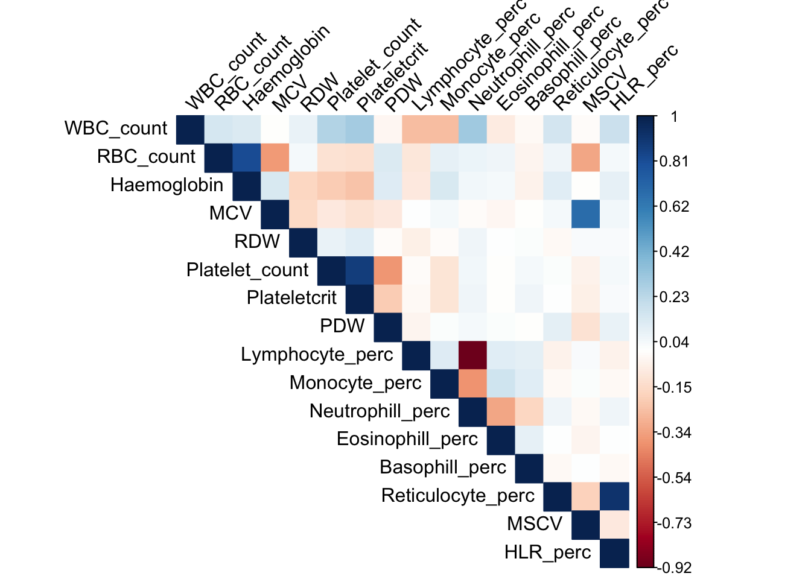
| Version | Author | Date |
|---|---|---|
| 9e0d1c3 | zouyuxin | 2020-11-02 |
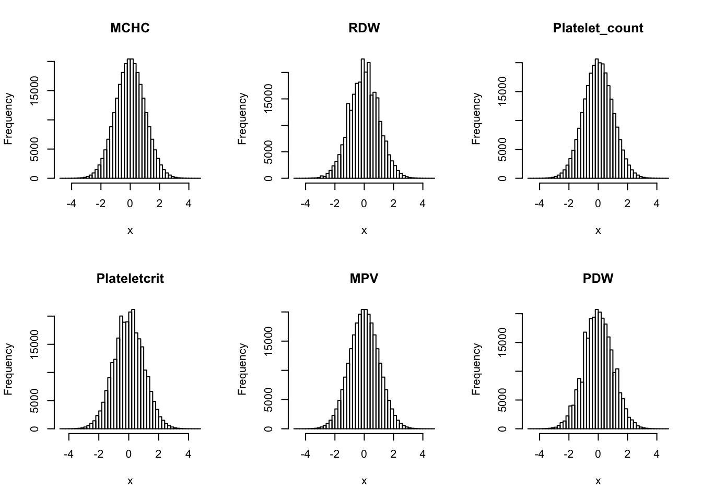
| Version | Author | Date |
|---|---|---|
| 9e0d1c3 | zouyuxin | 2020-11-02 |
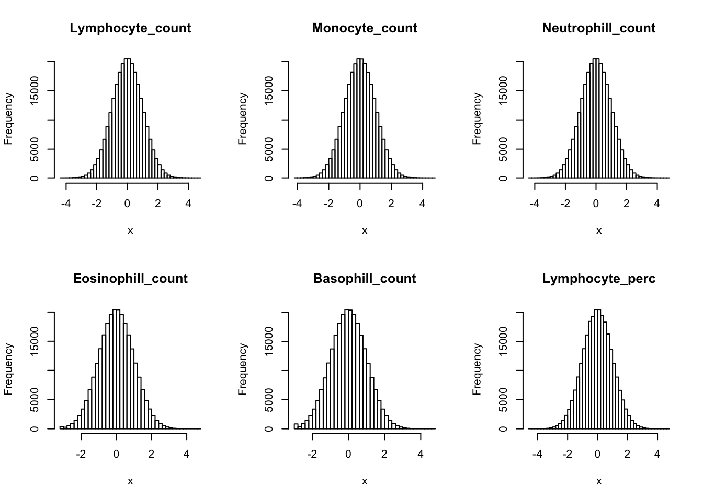
| Version | Author | Date |
|---|---|---|
| 9e0d1c3 | zouyuxin | 2020-11-02 |
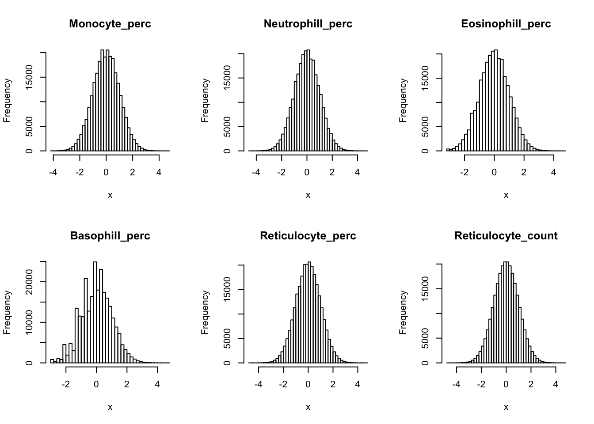
| Version | Author | Date |
|---|---|---|
| 9e0d1c3 | zouyuxin | 2020-11-02 |
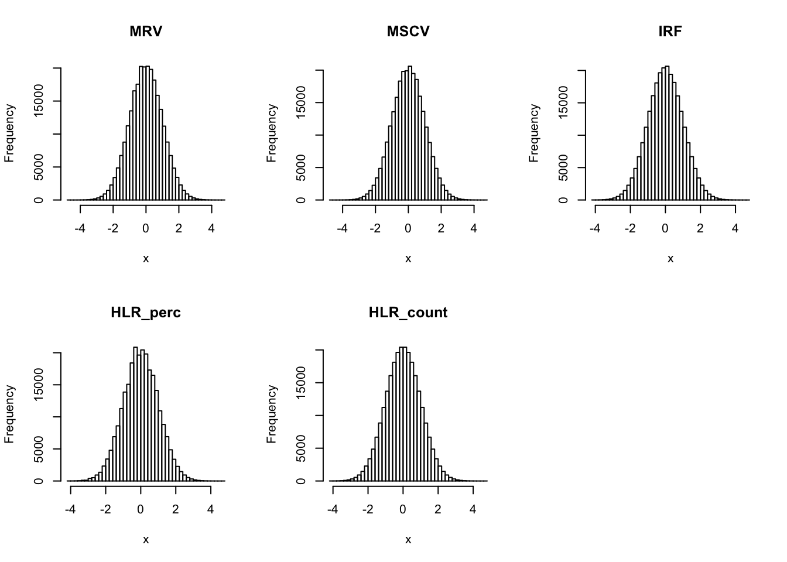
| Version | Author | Date |
|---|---|---|
| 9e0d1c3 | zouyuxin | 2020-11-02 |
Since we will jointly model these traits using multivariate normal distribution, we want to find outliers in multivariate normal, instead of univariate normal. There are derived phenotypes which depend on several measured phenotype. To simplify the problem, we discard directly calculated phenotypes. We use 16 phenotypes.
sub_names = c("WBC_count", "RBC_count", "Haemoglobin", "MCV", "RDW", "Platelet_count", "Plateletcrit", "PDW", "Lymphocyte_perc", "Monocyte_perc", "Neutrophill_perc", "Eosinophill_perc", "Basophill_perc", "Reticulocyte_perc", "MSCV", "HLR_perc")
dat_1_sub = dat_1 %>% select(sub_names)Note: Using an external vector in selections is ambiguous.
ℹ Use `all_of(sub_names)` instead of `sub_names` to silence this message.
ℹ See <https://tidyselect.r-lib.org/reference/faq-external-vector.html>.
This message is displayed once per session.Covariace matrix of traits
library(corrplot)corrplot 0.84 loadedcovy_sub = cov(dat_1_sub)
corrplot(covy_sub, method='color', type='upper', tl.col="black", tl.srt=45, is.corr = FALSE)
| Version | Author | Date |
|---|---|---|
| 9e0d1c3 | zouyuxin | 2020-11-02 |
D2_sub = stats::mahalanobis(dat_1_sub, center=0, cov=covy_sub)
dat_sub_select = dat_1[D2_sub < qchisq(0.01, df=16, lower.tail = F),]There are 248979 individuals.
sessionInfo()R version 3.6.3 (2020-02-29)
Platform: x86_64-apple-darwin15.6.0 (64-bit)
Running under: macOS Catalina 10.15.7
Matrix products: default
BLAS: /Library/Frameworks/R.framework/Versions/3.6/Resources/lib/libRblas.0.dylib
LAPACK: /Library/Frameworks/R.framework/Versions/3.6/Resources/lib/libRlapack.dylib
locale:
[1] en_US.UTF-8/en_US.UTF-8/en_US.UTF-8/C/en_US.UTF-8/en_US.UTF-8
attached base packages:
[1] stats graphics grDevices utils datasets methods base
other attached packages:
[1] corrplot_0.84 dplyr_1.0.2 data.table_1.13.2 workflowr_1.6.2
loaded via a namespace (and not attached):
[1] Rcpp_1.0.5 pillar_1.4.6 compiler_3.6.3 later_1.1.0.1
[5] git2r_0.27.1 tools_3.6.3 digest_0.6.27 evaluate_0.14
[9] lifecycle_0.2.0 tibble_3.0.4 pkgconfig_2.0.3 rlang_0.4.8
[13] cli_2.1.0 rstudioapi_0.11 yaml_2.2.1 xfun_0.19
[17] stringr_1.4.0 knitr_1.30 generics_0.1.0 fs_1.5.0
[21] vctrs_0.3.4 rprojroot_1.3-2 tidyselect_1.1.0 glue_1.4.2
[25] R6_2.5.0 fansi_0.4.1 rmarkdown_2.5 purrr_0.3.4
[29] magrittr_1.5 whisker_0.4 backports_1.1.10 promises_1.1.1
[33] ellipsis_0.3.1 htmltools_0.5.0 assertthat_0.2.1 httpuv_1.5.4
[37] stringi_1.5.3 crayon_1.3.4